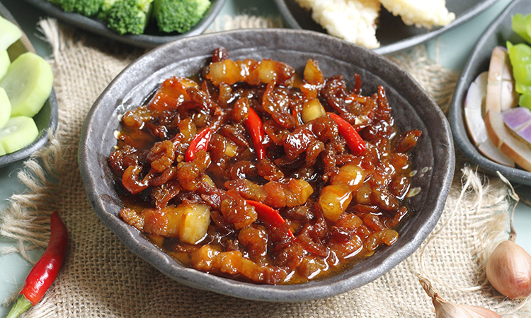

: 31/3/2023
Món kho là một trong những loại món ăn dân dã, quen thuộc của người Việt Nam. Có đến năm bảy kiểu kho: kho tộ, kho Tàu, kho lạt... rất đa dạng về hình thức và nguyên liệu. Với người Nam Bộ, đặc biệt là các tỉnh miền Tây, món kho quen thuộc nhất, phổ biến nhất, không ai là không biết tới chính là “kho quẹt”.

Ban đầu món ăn này được xuất phát từ thói quen ăn uống “đại khái” của người dân miền Tây sông nước, đặc biệt là những người làm nông. Vào những ngày mưa dai dẳng, vì không thể ra đồng, nên người dân dùng đại những thứ có trong nhà như tóp mỡ, tôm tép khô, cùng với gia vị là nước mắm, muối, bột ngọt,… nấu thành một hỗn hợp sền sệt, rồi ra vườn hái vội một hai nắm rau luộc lên ăn với cơm trắng. Vì kho quẹt rất mặn nên có thể nấu một lần mà ăn được nhiều ngày không sợ thiu.

Kho quẹt vốn được coi là món của nhà nghèo bởi vị mặn đặc trưng do được kho từ nước mắm, thế nên chỉ cần 1 vài đầu đũa kho quẹt cũng có thể "xong" bữa cơm. Món này lại dễ chế biến và có thể trữ được nhiều ngày. Vì thế, trong mùa mưa bão, lương thực khan hiếm, nhà nào có nồi kho quẹt là chẳng lo đói.

Xuất phát là món ăn dân gian nên hiện chưa có giải thích chính xác nào cho tên gọi kho quẹt. Theo một số người, có lẽ do được chế biến bằng phương pháp kho, rồi khi ăn dùng đũa quẹt một ít rồi ăn, nên cái tên kho quẹt xuất phát từ đó. Thành phần của món kho quẹt khá rẻ và dễ chế biến. Người dân chỉ cần kho nước mắm trong một cái nồi đất cho tới khi quánh lại, đặc sệt. Ở một số nơi người ta còn ninh cho nước mắm bốc hơi hết, chỉ còn lại lớp muối trắng.

Kho quẹt khá dễ làm nên ai cũng có thể học được, song muốn làm được món ăn ngon thì phải cần có nồi đất, loại niêu đen không tráng men. Nồi sau khi mua về phải đem đi ngâm nước muối, sau đó rửa sạch, cho nước lã vào luộc lên, như thế thì trong quá trình chế biến thức ăn sẽ không bị mùi hôi của đất, mà còn vừa tránh nứt nồi hay thấm nước.
Việc chọn rau luộc ăn với kho quẹt cũng rất quan trọng, thông thường đĩa rau thập cẩm gồm có: Đậu bắp, rau muống, cải ngọt, cải thảo, rau đắng, cải xanh, cà rốt, cải thìa, bầu cắt thành miếng, khổ qua,…
Nếu có dịp ghé Nam Bộ đặc biệt là những tỉnh miền Tây, bạn đừng bỏ qua cơ hội thưởng thức món kho quẹt để biết thêm về đặc sản quê hương và thêm yêu những món ăn dân dã, bình dị và đầy lôi cuốn của miền sông nước.
Address: Soc Trang
Phone: 84+865510677
Email: mekongescape83@gmail.com


Copyright by MeKong Escape - © 2023